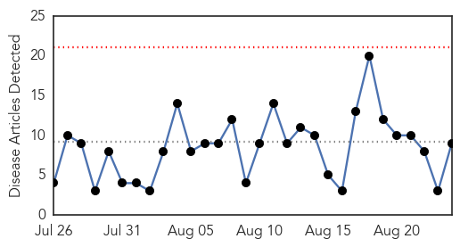
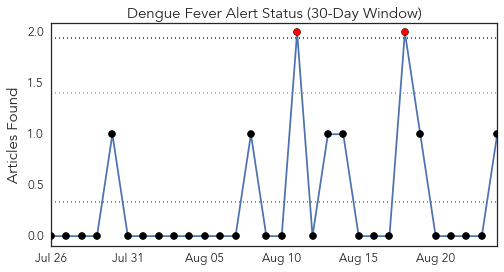
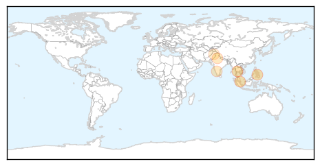
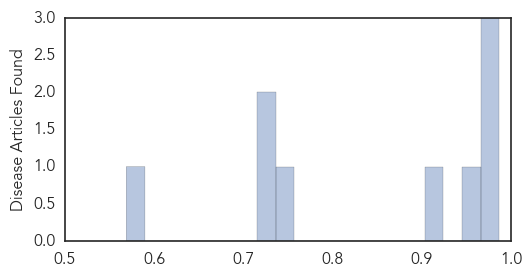

Dengue Fever
30-Day Web Trend
0 alerts, 0 warnings

30-Day Twitter Trend
2 alerts, 0 warnings

Article Locations
Article Confidences
Top Articles:
- 0.987
- General public warned of a resurgence of dengue fever
- 0.975
- Region, The Freeman Sections, The Freeman
- 0.970
- Noida sees spurt in dengue cases, government aware of only 11
- 0.960
- Singapore General Hospital, 60 Degrees Pharmaceuticals advance dengue fever clinical trials
- 0.915
- Govt health centres to get 7,300 nurses soon
- 0.748
- City activists slam TMC for not ensuring better hygiene in city, neglecting waste management
- 0.733
- 1,100 Dengue cases in Karnataka in last 30 days : Mail Today, News
- 0.730
- Dengue: 477 cases reported in August
- 0.569
- Pindi police line up against dengue
Top Tweets:
- 0.501
- Flavivirus news: Dengue cases near 49000 mark - Sun.Star: Dengue cases near 49000 markSun.StarT... http://t.co/B4M5v4NKMG pathogenposse
Measles
30-Day Web Trend
0 alerts, 0 warnings

30-Day Twitter Trend
0 alerts, 0 warnings

Article Locations

Article Confidences

Top Articles:
- 0.965
- Brisbane Health Authorities Warn Against Measles Outbreak
- 0.951
- Seventh case confirmed at UQ
- 0.921
- Controversial: Doctors in Khyber-Pakhtunkhwa say measles not epidemic
- 0.890
- Seven measles cases in five weeks at Queensland uni
- 0.853
- UN health workers vaccinate millions of children against polio and measles in war-ravaged Yemen
- 0.837
- More measles cases in Brisbane ‘may be likely’ as 7th UQ St. Lucia tests positive
- 0.796
- Time to treat violence in our city as a disease
- 0.579
- ANA issues immunization recommendation
Top Tweets:
-
No tweets found for Aug 24, 2015